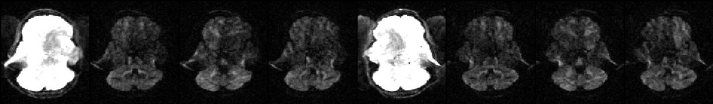

Contents
- Introduction
- Users Guide
- FAQ
Running eddy
Running eddy is a little bit more complicated than running for example its predecessor eddy_correct. The reasons for this are
eddy attempts to combine the correction for susceptibility and eddy currents/movements so that there is only one single resampling. This means we need to "inform" eddy of the results from topup (which is used to calculate the susceptibility distortions).
Unlike eddy_correct, eddy attempts to model the diffusion signal. This means that eddy needs to be informed of the diffusion direction/weighting that was used for each volume.
eddy can utilise the information from different acquisitions that modulate how off-resonance translates into distortions. An example of this would be acquisitions with different polarity of the phase-encoding. Hence we need to inform eddy about how each volume was acquired.
The need to pass more information to eddy results in a more complicated command line. Here I will outline a typical use of topup and eddy (they are really intended to be used together) on a "typical" data set suited for use with eddy.
The data
The data for this example consists of one set of volumes acquired with phase-encoding A>>P consisting of 5 b=0 volumes and 59 diffusion weighted volumes
data.nii.gz |
First b=0 volume and the first four dwis of the A>>P data |
and one single b=0 volume with phase-encoding P>>A.
P2A_b0.nii.gz |
The P>>A data |
Note how the shape of the b=0 scan is different for the two different acquisitions. This is what topup will use in order to calculate the susceptibility induced off-resonance field.
Running topup on the b=0 volumes
The first thing we do is to run topup to estimate the susceptibility induced off-resonance field. In order to prepare the data for topup we issue the following commands
fslroi data A2P_b0 0 1 fslmerge -t A2P_P2A_b0 A2P_b0 P2A_b0 printf "0 -1 0 0.0646\n0 1 0 0.0646" > acqparams.txt
The first two commands will produce a file called A2P_P2A_b0.nii.gz containing the two b=0 volume, and the third command will create a file (named acqparams.txt) that informs topup/eddy of how the data was collected. This file is described here, here and in more detail here.
Now it is time to run topup which we do with the command
topup --imain=A2P_P2A_b0 --datain=acqparams.txt --config=b02b0.cnf --out=my_topup_results --iout=my_hifi_b0
which will give us as our main result a file named my_topup_results_fieldcoef.nii.gz which contains an estimate of the susceptibility induced off-resonance field.
Running eddy
Before we can run eddy we need to do a couple of more preparations. First of all we need a mask that separate brain from non-brain. This is no different from for example the mask that `dtifit` needs. Since eddy will work in a non-distorted space we will base the mask on my_hifi_b0.nii.gz (the secondary output from our topup command above). We generate this mask with the commands
fslmaths my_hifi_b0 -Tmean my_hifi_b0 bet my_hifi_b0 my_hifi_b0_brain -m
which results in the file my_hifi_b0_brain_mask.nii.gz. It may be a good idea to check this stage to ensure bet has done a good job of extracting the brain.
The final thing we need to do is to create an index file that tells eddy which line/of the lines in the acqparams.txt file that are relevant for the data passed into eddy. In this case all the volumes in data.nii.gz are acquired A>>P which means that the first line of acqparams.txt describes the acquisition for all the volume. We specify that by passing a text file with as many ones as there are volumes in data.nii.gz. One way of creating such a file would be to type the following commands
indx="" for ((i=1; i<=64; i+=1)); do indx="$indx 1"; done echo $indx > index.txt
where 64 is the total number of volumes in data.nii.gz and needs to be replaced by the number of volumes in your data.
We are now in a position to run eddy using the command
eddy --imain=data --mask=my_hifi_b0_brain_mask --acqp=acqparams.txt --index=index.txt --bvecs=bvecs --bvals=bvals --topup=my_topup_results --out=eddy_corrected_data
You may be in for quite a long wait as eddy is quite CPU intensive and also memory hungry. It has been written using OpenMP to take advantage of multiple processors and this may/may not be available to you depending on how it was built in your system. A rule of thumb for how much memory eddy will use is 8*m*nxnynz bytes where m is the number of volumes in --imain, nx is the matrix-size in the x-direction, ny is the matrix size in the y-direction and nz is the number of slices.
eddy with outlier replacement
When (not if) a subject makes a movement that coincides in time with the diffusion encoding part of the sequence, there will be partial or complete signal dropout. The dropout will affect the whole (the most common case) or parts of a slice. In the presence of out-of-plane rotations these slices will turn into diagonal bands when eddy rotates the volume back. If uncorrected this will affect any measures derived from the data.
The latest version of eddy has a mechanism for detecting these dropout-slices and replacing them with Gaussian Process predictions. All one needs to do for example in the example above is to add --repol to the command line.
eddy --imain=data --mask=my_hifi_b0_brain_mask --acqp=acqparams.txt --index=index.txt --bvecs=bvecs --bvals=bvals --topup=my_topup_results --repol --out=eddy_corrected_data
The exact details of how the outlier replacement is performed can be specified by the user, and in particular if ones data has been acquired with multi-band it can be worth taking a look here.
The pertinent reference for when using the --repol functionality is at the main eddy page.
Example of before and after outlier replacement |
This mini-movie flips between before and after outlier replacement |
Understanding eddy output
The --out parameter specifies the basename for all output files of eddy. It is used as the name for all eddy output files, but with different extensions. If we assume that user specified --out=my_eddy_output, the files that are always written are
my_eddy_output.nii.gz
This is the main output and consists of the input data after correction for eddy currents and subject movement, and for susceptibility if --topup or --field was specified, and for signal dropout if --repol was set. Chances are this is the only output file you will be interested in (in the context of eddy).my_eddy_output.eddy_parameters
This is a text file with one row for each volume in --imain and one column for each parameter. The first six columns correspond to subject movement starting with three translations followed by three rotations. The remaining columns pertain to the EC-induced fields and the number and interpretation of them will depend of which EC model was specified.my_eddy_output.rotated_bvecs
When a subject moves such that it constitutes a rotation around some axis and this is subsequently reoriented, it will create an inconsistency in the relationship between the data and the "bvecs" (directions of diffusion weighting). This can be remedied by using the my_eddy_output.rotated_bvecs file for subsequent analysis. For the rotation to work correctly the bvecs need to be "correct" for FSL before being fed into eddy. The easiest way to check that this is the case for your data is to run FDT and display the _V1 files in fslview or FSLeyes to make sure that the eigenvectors line up across voxels.my_eddy_output.eddy_movement_rms
A summary of the "total movement" in each volume is created by calculating the displacement of each voxel and then averaging the squares of those displacements across all intracerebral voxels (as determined by --mask and finally taking the square root of that. The file has two columns where the first contains the RMS movement relative the first volume and the second column the RMS relative the previous volume.my_eddy_output.eddy_restricted_movement_rms
There is an inherent ambiguity between any EC component that has a non-zero mean across the FOV and subject movement (translation) in the PE direction. They will affect the data in identical (or close to identical if a susceptibility field is specified) ways. That means that both these parameters are estimated by eddy with large uncertainty. This doesn't matter for the correction of the images, it makes no difference if we estimate a large constant EC components and small movement or if we estimate a small EC component and large movement. The corrected images will be (close to) identical. But it matters if one wants to know how much the subject moved. We therefore supplies this file that estimates the movement RMS as above, but which disregards translation in the PE direction.my_eddy_output.eddy_post_eddy_shell_alignment_parameters
This is a text file with the rigid body movement parameters between the different shells as estimated by a post-hoc mutual information based registration (see --dont_peas for details). These parameters will be estimated even if --dont_peas has been set, but in that case they have not been applied to the corrected images in my_eddy_output.nii.gz.my_eddy_output.eddy_outlier_report
This is a text-file with a plain language report on what outlier slices eddy has found. This file is always created, as are the other my_eddy_output.eddy_outlier_* files described below, even if the --repol flag has not been set. Internally eddy will always detect and replace outliers to make sure they don't affect the estimation of EC/movement, and if --repol has not been set it will re-introduce the original slices before writing my_eddy_output.nii.gz.- my_eddy_output.eddy_outlier_map
- my_eddy_output.eddy_outlier_n_stdev_map
my_eddy_output.eddy_outlier_n_sqr_stdev_map
These are numeric matrices in ASCII format that all have the same general layout. They consist of an initial line of text, after which there is one row for each volume and one column for each slice. Each row corresponding to a b=0 volume is all zeros since eddy don't consider outliers in these. The meaning of the numbers is different for the three files..eddy_outlier_map
All numbers are either 0, meaning that scan-slice is not an outliers, or 1 meaning that is is..eddy_outlier_n_stdev_map
The numbers denote how many standard deviations off the mean difference between observation and prediction is..eddy_outlier_n_sqr_stdev_map
The numbers denote how many standard deviations off the square root of the mean squared difference between observation and prediction is.
The following file is only written if the --repol flag was set.
my_eddy_output.eddy_outlier_free_data.nii.gz
This is the original data given by --imain not corrected for susceptibility or EC-induced distortions or subject movement, but with outlier slices replaced by the Gaussian Process predictions. This file is generated for anyone who might want to use eddy for outlier correction but who want to use some other method to correct for distortions and movement. Though why anyone would want to do that is not clear to us.
List of parameters
- Parameters that specify input files
--imain=filename
Name of a file with input images. E.g. all_my_images.nii. Compulsory.--mask=filename
Name of a file with mask specifying brain vs no-brain. E.g. my_brain_mask.nii. Compulsory.--acqp=filename
Name of text file with information about the acquisition of the images in --imain. E.g. my_scan_pars.txt. Compulsory.--index=filename
Name of text file specifying the relationship between the images in --imain and the information in --acqp and --topup. E.g. index.txt. Compulsory.--bvecs=filename
Name of text-file with normalised diffusion gradients. Compulsory.--bvals=filename
Name of text-file with b-values. Compulsory.--topup=filename
Name of output from a previous topup run. Should be the same as the argument given to topup's --out. Optional.--field=filename
Name of image volume representing the susceptibility field. Should be in Hz. Optional.--field_mat=filename
Name of rigid body matrix specifying the relative positions of --field and --imain. Optional.
- Parameters specifying names of output-files
--out=basename
Basename for output-files. The corrected images will be named "basename".nii.gz. Compulsory.
Parameters specifying how eddy should be run
--flm=linear/quadratic/cubic
Spatial model for the field generated by eddy currents. Default quadratic.--slm=none/linear/quadratic
Model for how diffusion gradients generate eddy currents. Default none.--fwhm="fwhm in mm"
Filter width to use for pre-filtering of data for the estimation process. Default 0.--niter="required number of iterations"
Specifies how many iterations should be run. Default 5.--fep
Fill Empty Planes. Default false.--interp=spline/trilinear
Specifies interpolation model during estimation. Default spline.--resamp=jac/lsr
Specifies final resampling strategy. Default jac.--nvoxhp="number of voxels"
Specifies number of voxels to use for GP hyperparameter estimation. Default 1000.--ff="number between 1 and 10"
Fudge factor that imposes Q-space smoothing during estimation. Default 10.--dont_sep_offs_move
Do not attempt to separate subject movement from field DC component. Default false.--dont_peas
Do not end with an alignment of shells to each other. Default false.
- Parameters pertaining to outlier replacement
--repol
Replace outliers. Default false.--ol_nstd
No. of standard deviations away a slice must be to qualify as an outlier. Default 4.--ol_nvox
The minimum no. of intracerebral voxels in a slice to consider it as an outlier. Default 250.--ol_type
Base outlier detection on slices (sw) multi-band groups (mb) or both (both). Default sw.--ol_pos
Consider both positive and negative outliers. Default false.--ol_sqr
Consider outliers in sum-of-squared distribution. Default false.--mb
Specifies multi-band factor (number of simultaneous slices). Default 1.--mb_offs
Specifies missing slices at top or bottom. Default 0.
- Miscellaneous parameters
--data_is_shelled
Do not check that data is shelled. Trust the user. Default false.--verbose
Print progress information to the screen while running. Can be useful to pipe into file before reporting problems--very_verbose
Print very rich progress information to the screen while running. Can be useful to pipe into file before reporting problems--help
Take a wild stab.
Parameters explained
--imain
Should specify a 4D image file with all your images acquired as part of a diffusion protocol. I.e. it should contain both your dwis and your b=0 images. If you have collected your data with reversed phase-encode blips, data for both blip-directions should be in this file.
--mask
Single volume image file with ones and zeros specifying brain (one) and no-brain (zero). Typically obtained by running BET on the first b=0 image. If you have previously run topup on your data I suggest you run BET on the first volume (or the average of all volumes) of the --iout output and use that.
--acqp
A text-file describing the acquisition parameters for the different images in --imain. The format of this file is identical to that used by topup (though the parameter is called --datain there) and described in detail here.
--index
A text-file that determines the relationship between on the one hand the images in --imain and on the other hand the acquisition parameters in --acqp and (optionally) the subject movement information in --topup. It should be a single column (or row) with one entry per volume in --imain. We will use a small (simplified) example to make it clear.

The image above shows a selected slice from each of the eight volumes in --imain. The associated --acqp file is
-1 0 0 0.051
1 0 0 0.051
which specifies that phase-encoding is performed in the x-direction, sometimes traversing k-space left->right (-1) and sometimes right->left (1). Finally the --index file is
1 1 1 1 2 2 2 2
which specifies that the first four volumes in --imain were acquired using the acquisition parameters on the first row (index 1) of the --acqp file, and that volumes 5--8 were acquired according to the second row (index 2).
There are cases when there may be advantageous to have more than two lines in the --acqp file and in these cases there will be more than two different index values in the --index file. These cases are explained here
--bvecs
A text file with normalised vectors describing the direction of the diffusion weighting. This is the same file that you would use for FDT.
--bvals
A text file with b-values () describing the "amount of" diffusion weighting. This is the same file that you would use for FDT.
--topup
This should only be specified if you have previously run topup on your data and should be the same name that you gave as an argument to the --out parameter when you ran topup.
--field
If there is no topup output available for your study you may alternatively use a "traditional" fieldmap in its place. This can for example be a dual echo-time fieldmap that has been prepared using PRELUDE. Note that in contrast to for example FUGUE it expects the fieldmap to be scaled in Hz. For boring reasons the filename has to be given without an extension. For example --field=my_field, not --field=my_field.nii.gz.
 There are two important caveats with --field, which is why we strongly recommend using a topup derived field if at all possible. These are
There are two important caveats with --field, which is why we strongly recommend using a topup derived field if at all possible. These are
If one uses the same --acqp file for both topup and eddy it doesn't matter if one get the total acquisition time or the PE-polarity wrong. The errors in topup and eddy will cancel out and the end results will still be correct. Our experience is that getting these two numbers right is the biggest problem with using FUGUE.
If the first volume input to topup is the same as the first volume in --imain to eddy, the fieldmap will automatically be in the reference space of eddy. When using the --field option the user is responsible for making sure the fieldmap is registered to the eddy data.
--field_mat
Specifies a flirt style rigid body matrix that specifies the relative locations of the field specified by --field and the first volume in the file specified by --imain. If my_field is the field specified by --field, my_ima is the first volume of --imain and my_mat is the matrix specified by --field_mat. Then the command flirt -ref my_ima -in my_field -init my_mat -applyxfm should be the command that puts my_field in the space of my_ima.
--out
Specifies the basename of the output. Let us say --out="basename". The output will then consist of a 4D image file named <basename>.nii.gz containing all the corrected volumes and a text-file named <basename>.eddy_parameters with parameters defining the field and movement for each scan.
--flm
This parameter takes the values linear, quadratic or cubic. It specifies how "complicated" we believe the eddy current-induced fields may be.
Setting it to linear implies that we think that the field caused be eddy currents will be some combination of linear gradients in the x-, y- and z-directions. It is this model that is the basis for the claim "eddy current distortions is a combination of shears, a zoom and a translation". It is interesting (and surprising) how successful this model has been in describing (and correcting) eddy current distortions since not even the fields we intend to be linear (i.e. our gradients) are particularly linear on modern scanners.
The next model in order of "complication" is quadratic which assumes that the eddy current induced field can be modelled as some combination of linear and quadratic terms (x, y, z, x2, y2, z2, xy, xz and yz). This is almost certainly also a vast oversimplification but our practical experience has been that this model successfully corrects for example the HCP data (which is not well corrected by the linear model).
The final model is cubic which in addition to the terms in the quadratic model also has cubic terms (x3, x2y, etc). We have yet to find a data set where the cubic model performs significantly better than the quadratic one. Note also that the more complicated the model the longer will eddy take to run.
--slm
"Second level model" that specifies the mathematical form for how the diffusion gradients cause eddy currents. For high quality data with 60 directions, or more, sampled on the whole sphere we have not found any advantage of performing second level modelling. Hence our recommendation for such data is to use none, and that is also the default.
If the data has quite few directions and/or is has not been sampled on the whole sphere it can be advantageous to specify --slm=linear.
--fwhm
Specifies the FWHM of a gaussian filter that is used to pre-condition the data before using it to estimate the distortions. In general the accuracy of the correction is not strongly dependent on the FWHM. Empirical tests have shown that ~1-2mm might be best, but by so little that the default has been left at 0.
One exception is when there is substantial subject movement, which may mean that eddy fails to converge in 5 iterations if run with fwhm=0. In such cases we have found that --fwhm=10,0,0,0,0 works well. It means that the first iteration is run with a FWHM of 10mm, which helps that algorithm to take a big step towards the true solution. The remaining iterations are run with a FWHM of 0mm, which offers high accuracy.
--niter
eddy does not check for convergence. Instead it runs a fixed number of iterations given by --niter. This is not unusual for registration algorithms where each iteration is expensive (i.e. takes long time). Instead we run it for a fixed number of iterations, 5 as default.
If, on visual inspection, one finds residual movement or EC-induced distortions it is possible that eddy has not fully converged. In that case we primarily recommend that one uses --fwhm=10,0,0,0,0, as described above, to speed up convergence. Only if that fails do we recommend increasing the number of iterations.
--fep
Stands for "Fill Empty Planes". For reasons that are not completely clear to us the reconstructed EPI images from some manufacturers contain one or more empty "planes". A "plane" in this context do not necessarily mean a "slice". Instead it can be for example the "plane" that constitutes the last voxel along the PE-direction for each "PE-direction column". The presence/absence of these "empty planes" seems to depend on the exact details of image encoding part of the sequence.
IF --fep is set eddy will attempt to identify the empty planes and "fill them in". The filling will consist of duplicating the previous plane if the plane is perpendicular to the frequency-encode direction and by interpolation between the previous and the "wrap-around plane" if the plane is perpendicular to the PE-direction .
--interp
Specifies the interpolation model used during the estimation phase, and during the final resampling if --resamp=jac is used. We strongly recommend staying with spline, which is also the default.
--resamp
Specifies how the final resampling is performed. The options are
jac: Stands for Jacobian modulation. This is a "traditional" type of interpolation (spline or trilinear depending on the --interp parameter) combined with Jacobian modulation to account for signal pile-up/dilution caused by local stretching/compression. However, in areas of compression (resulting in signal pile-up) there is a loss of resolution that this type of resampling cannot resolve. If acquisitions have not been repeated with opposed PE-directions, this is the only option that can be used.
- lsr: Stands for Least-Squares Reconstruction. This method attempts to use the complimentary information in images acquired with opposing PE-directions, where a compressed area in one of the images will be stretched in the other image. This method can only be used if all acquisitions have been repeated with opposed PE-directions.
--nvoxhp
Specifies how many (randomly selected within the brain mask) voxels that are used when estimating the hyperparameters of the Gaussian Process used to make predictions. The default is 1000 voxels, and that is more than sufficient for typical data with resolution of 2x2x2mm or lower. For very high resolution data, such as for example the HCP 7T data, with relatively low voxel-wise SNR one may need to increase this number. The only "adverse" effect of increasing this number is an increase in execution time.
--ff
This should be a number between 1 and 10 and determines the level of Q-space smoothing that is used by the prediction maker during the estimation of the movement/distortions. Empirical testing has indicated that any number above 5 gives best results. We have set the default to 10 to be on the safe side.
--dont_sep_offs_move
All our models for the EC-field contains a component that is constant across the field and that results in a translation of the object in the PE-direction. Depending on how the data has been acquired it can be more or less difficult to distinguish between this constant component and subject movement. It matters because it affects how the diffusion weighted images are aligned with the b=0 images. Therefore eddy attempts to distinguish the two by fitting a second level model to the estimated constant component, and everything that is not explained by that model will be attributed to subject movement.
If you set this flag eddy will not do that estimation. The option to turn this off is a remnant from when we did not know how well it would work and it is very unlikely you will ever use this flag. It will eventually be deprecated.
--dont_peas
The motion correction within eddy has greatest precision within a shell and has a bigger uncertainty between shells. There is no estimation of movement between the first b=0 volume and the first diffusion weighted volume. Instead is is assumed that these have been acquired very close in time and that there were no movement between them.
If there are multiple shells or if the assumption of no movement between the first b=0 and the first diffusion weighted volume is not fulfilled it can be advantageous to perform a "Post Eddy Alignment of Shells" (peas). Our testing indicates that the peas has an accuracy of ~0.2-0.3mm, i.e. it is associated with some uncertainty. This precision is still such that peas is performed as default.
But, if one has a data set with a single shell (i.e. a single non-zero shell) and the assumption of no movement between the first b=0 and the first diffusion weighted image is true it can be better to avoid that uncertainty. And in that case it may be better to turn off peas by setting the --dont_peas flag.
--repol
When set this flag instructs eddy to remove any slices deemed as outliers and replace them with predictions made by the Gaussian Process. Exactly what constitutes an outlier is affected by the parameters --ol_nstd, --ol_nvox, --ol_type, --ol_pos and --ol_sqr. If the defaults are used for all those parameters an outlier is defined as a slice whose average intensity is at least four standard deviations lower than the expected intensity, where the expectation is given by the Gaussian Process prediction.
The default is to not do outlier replacement since we don't want to risk people using it "unawares". However, our experience and tests indicate that it is always a good idea to use --repol.
--ol_nstd
This parameter determines how many standard deviations away a slice need to be in order to be considered an outlier. The default value of 4 is a good compromise between type 1 and 2 errors for a "standard" data set of 50-100 directions. Our tests also indicate that the parameter is not terribly critical and that any value between 3 and 5 is good for such data. For data of very high quality, such as for example HCP data with 576 dwi volumes, one can use a higher value (for example 5). Conversely, for data with few directions a lower threshold can be used.
--ol_nvox
This parameter determines the minimum number of intracerebral voxels a slice need to have in order to be considered in the outliers estimation. Consider for example a slice at the very top of the brain with only ten brain voxels. The average (based on only ten voxels) difference from the prediction will be very poorly estimated and to try to determine if it was an outlier or not on that basis would be very uncertain. For that reason there is a minimum number of brain voxels (as determined by the --mask) for a slice to be considered. The default is 250.
--ol_type
The normal behaviour for eddy is to consider each slice in isolation when assessing outliers. When acquiring multi-band (mb) data each slice in the group will have a similar signal dropout when it is caused by gross subject movement (as opposed to pulsatile movement of e.g. the brain stem). It therefore makes sense to consider an mb-group as the unit when assessing outliers. There are therefore three options for the unit of outliers.
- Slice-wise (sw) is the default and most basic way of estimating outliers.
- Group-wise (gw) considers an mb-group as the outlier unit.
- Both (both) considers an mb-group as the unit, but additionally looks for slice-wise outliers. This is to find single slices within a group that has been affected by pulsatile movement not affecting the other slices.
Default is sw.
--ol_pos
By default eddy only considers signal dropout, i.e. the negative end of the distribution of differences. One could conceivably also have positive outliers, i.e. slices where the signal is greater than expected. This could for example be caused by spiking or other acquisition related problems. If one wants to detect and remove this type of outliers one can use the --ol_pos flag.
In general we don't encourage its use since we believe that type of artefacts should be detected and corrected at source. We have looked a large number of FMRIB and HCP data sets and not found a single believable positive outlier.
--ol_sqr
Similarly to the --ol_pos flag above it extends the scope of outliers that eddy considers. If the --ol_sqr flag is set eddy will look for outliers also in the distribution of "sums of squared differences between observations and predictions". This means it will detect also artefacts that doesn't cause a change in mean intensity.
Similarly to --ol_pos we don't encourage the use of --ol_sqr. Artefacts that fall into this category should be identified and the causes corrected at the acquisition stage.
--mb
If --ol_type=gw or --ol_type=both eddy needs to know how the multi-band groups were acquired and to that end --mb has to be set. If for example the total number of slices is 15 and mb=3 it will be assumed that slices 0,5,10 were acquired as one group, 1,6,11 as the next group etc (slices numbered 0,1,...14).
 The next version of eddy will need a more detailed description of the multi-band structure, so --mb_offs is likely to be deprecated in the future.
The next version of eddy will need a more detailed description of the multi-band structure, so --mb_offs is likely to be deprecated in the future.
--mb_offs
If a slice has been removed at the top or bottom of the volumes in --imain the group structure given by --mb will no longer hold. If the bottom slice has been removed --mb_offs should be set to --mb_offs=-1. For the example above it would mean that the first group of slices would consist of slices 4,9 and the second group of 0,5,10 where the slice numbering refers to the new (with missing slice) volume numbered 0,1,13. Correspondingly, if the top slice was removed it should be set to 1.
 The next version of eddy will need a more detailed description of the multi-band structure, so --mb_offs is likely to be deprecated in the future.
The next version of eddy will need a more detailed description of the multi-band structure, so --mb_offs is likely to be deprecated in the future.
--data_is_shelled
At the moment eddy works for single- or multi-shell diffusion data, i.e. it doesn't work for DSI data. In order to ensure that the data is shelled `eddy "checks it", and only proceeds if it is happy that it is indeed shelled. The checking is performed through a set of heuristics such as i) how many shells are there? ii) what are the absolute numbers of directions for each shell? iii) what are the relative numbers of directions for each shell? etc. It will for example be suspicious of too many shells, too few directions for one of the shells etc.
It has emerged that some popular schemes get caught in this test. Some groups will for example acquire a "mini shell" with low b-value and few directions and that has failed to pass the "check", even though it turns out eddy works perfectly well on the data. For that reason we have introduced the --data_is_shelled flag.
If set, it will bypass any checking and eddy will proceed as if data was shelled. Please be aware that if you have to use this flag you may be in untested territory and that it is a good idea to check your data extra carefully after having run eddy on it.
--verbose
Turns on printing of information about the algorithms progress to the screen.